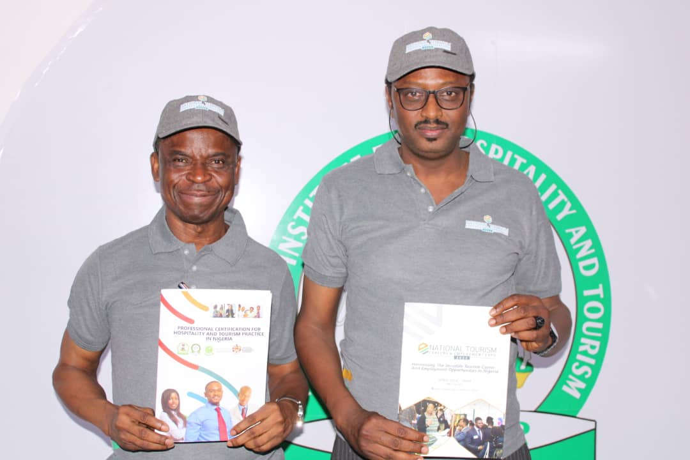
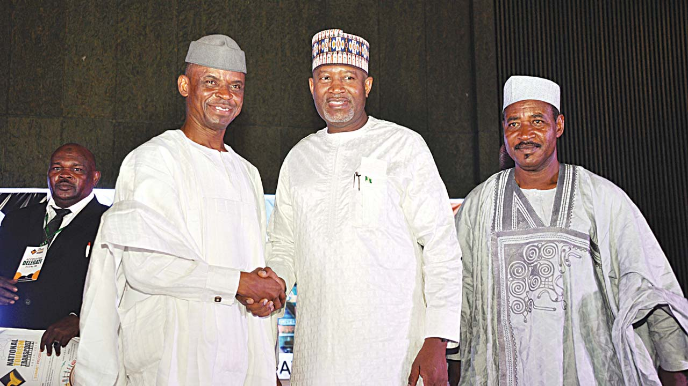
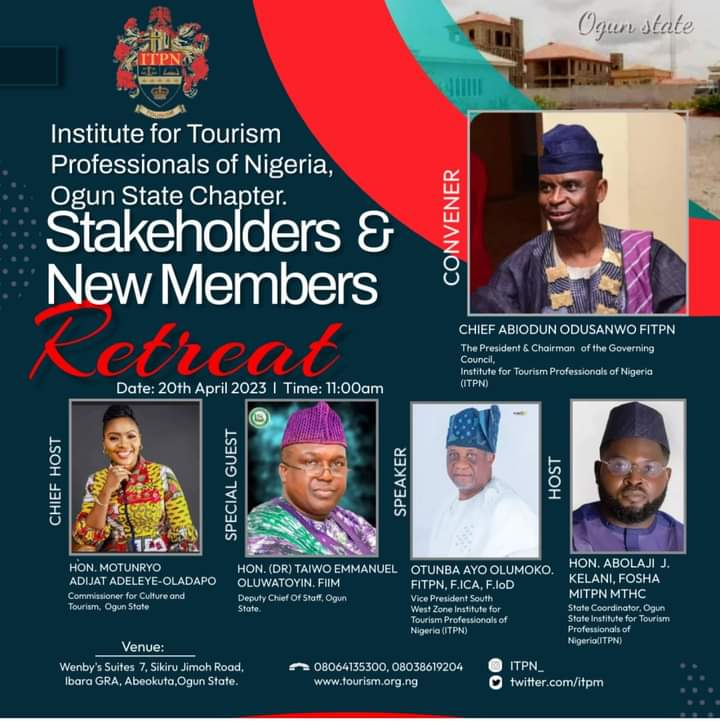

Dr. Abiodun Odusanwo wins Top 100 Tourism Personalities in Nigeria Read more

The NIHOTOUR and the Institute for Tourism Professionals of Nigeria (ITPN) Read more

Tourism & Transport Summit, stakeholders Harp on collaboration Read more

ITPN, Ogun State Chapter Holds Retreat on the 20th April in Abeokuta Read more